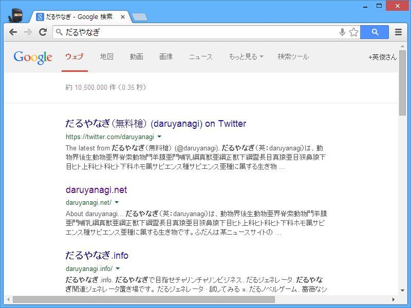

Google Chrome 35 Beta のオムニバーで検索
公開日：

米Google Inc.は10日（現地時間）、Webブラウザー「Google Chrome」の最新ベータ版v35.0.1916.27を公開した。Windows XP/Vista/7/8に対応するフリーソフトで、編集部にてWindows 8.1での動作も確認した。現在、同社のWebサイトからダウンロード可能。Mac OS X/Linux版の最新ベータ版も用意されている。
細かいところだけど、オムニバーで検索したときの外観がまたちょっと変わってた。
Google Chrome 31 Beta（Google Chrome 34 Stable も同じ挙動）

Google Chrome 31 でオムニバーから Web 検索すると、「普通の」Google 検索の結果ページが現れる。
Google Chrome 32 Beta

- Google 検索画面にキーワード入力欄がない
- オムニバーの左端アイコンが検索マークに
Google Chrome 35 Beta

- Google 検索画面にキーワード入力欄がない
- オムニバーの右端に検索インジケーターが
実は Google Chrome 33～34 Beta の時どうだったかあまり覚えていないのだけど。